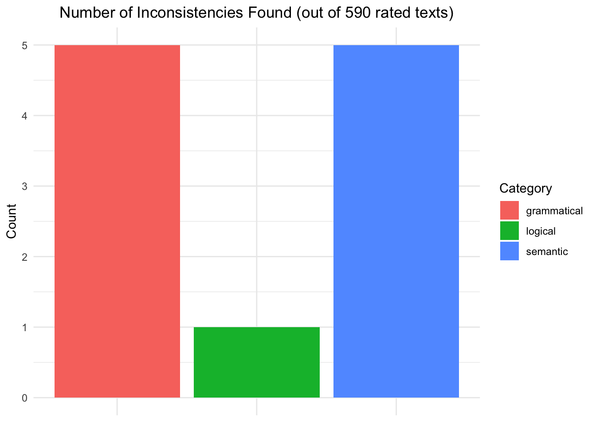

Code
library(pacman)
p_load(tidyverse, ggplot2, readr, janitor, psych, ggthemes, car, stringr ,rstatix, patchwork, gridExtra, gt)
theme_set(theme_minimal())Understanding to what extent the results of a Large Language Model (LLM) can be trusted in text generation tasks is of fundamental importance nowadays. To this end, this technical report discusses the results of an experiment carried out using an open source LLM (Mistral) to understand how well this kind of model can represent the emotional context conveyed through a textual prompt. Mistral’s model was instructed to generate texts following a prompt that could be either positively or negatively charged emotionally. Moreover, the temperature of the model was also manipulated to check for possible drifts from the given prompts with higher temperatures. The results of a semantic frame analysis are reported to show that the emotions that occur in an LLM-generated text are mostly in line with the expectations provided by the content of the prompt used to generate the text. Additional analyses are discussed to quantify semantical and logical correctness to show that open source LLMs perform very well for the task considered in the current experiment but are not immune to biases.
This additional portion of the report goes through the technical steps and setup of the code used to produce the data and analyze it.
Data for this experiment was produced in two steps. During the first iteration, carried out calling the API remotely, we asked the API to produce the entire sample of data (around 600 texts, 200 for each temperature level selected). However, we noticed that most of the texts produced with the highest temperature (1.3) were not usable and after cleaning them (in Python using the clean_data.py script) we had to rebalance the groups and adjust for the dropped texts from the highest temperature group.
#! clean_data.py
# function used to clean the data
def clean_df(df: pd.DataFrame) -> pd.DataFrame:
# make text lowercase
df['text_lower'] = df['text'].str.lower()
# drop if text is shorter than 500 characters
min_length = df['text_lower'].str.len() >= 500
# check if text starts with parenthesis
parenthesis = df['text_lower'].str.startswith('(')
# check if non ascii letters are used
non_ascii_mask = df['text'].apply(lambda x: not all(ord(char) < 128 for char in str(x)))
df_cleaned = df[(~parenthesis) & (~non_ascii_mask) & (min_length)]
return df_cleanedTo this end, the second iteration of the text generation happened. This time, however, the same Mistral model was run locally using the framework provided by ollama and exploiting the connection to the locally hosted API. The texts produced in this fashion passed all cleaning tests and were included in the final dataset by running the clean_data.py script and saving the final merged dataset in .csv format. The last step was to compute \(z\)-scores for each emotion embedded in the generated texts using the create_emotions_df.py script. The final dataset (emotions.csv) was then saved and was used for the subsequent analyses. After performing this step, no more data cleaning was needed.
from emoatlas import EmoScores
import pandas as pd
# compute emotion scores
def compute_scores(df: pd.DataFrame, n = -1):
emos = EmoScores()
# initialize empty dictionary to store the scores
dct = {
'anger' : list(),
'trust' : list(),
'surprise' : list(),
'disgust' : list(),
'joy' : list(),
'sadness' : list(),
'fear' : list(),
'anticipation' : list()
}
# compute score for each text in the df
for i in range(len(df)):
text = df['text'].iloc[i]
# compute emotional scores using EmoAtlas
scores = emos.zscores(text)
# append to each emotion the score for the current text
for k in scores:
dct[k].append(scores[k])
return dctThe analysis for the first study was carried out using R version 4.4.3 and the following packages:
library(pacman)
p_load(tidyverse, ggplot2, readr, janitor, psych, ggthemes, car, stringr ,rstatix, patchwork, gridExtra, gt)
theme_set(theme_minimal())Data was then imported:
emotions <- read_csv("generated_data/cleaned/emotions.csv")
# remove first two columns, keep all others
emotions <- emotions[, 3:length(emotions)]The first step in preparing this analysis is to declare the groups and specify their partitioning in the dataframe.
Then, it is informative to look at different summary statistics for each condition.
# check summary statistics by condition
describeBy(emotions ~ condition)When comparing multiple means, the first test that comes to mind is ANOVA. However, since it is a parametric test, it is important to check if the assumption that it makes on data are respected. The two main assumptions of ANOVA are:
To check those assumptions, two tests are usually employed: Shapiro-Wilk’s test, and Levene’s test. If any one of those tests returns a statistically significant result for any emotion, then it means that ANOVA cannot be used as the data violates the basic assumptions that it makes. A level of significance \(\alpha\) of 5% is used to interpret statistical significance for those tests.
Below follows a summary of the results from the tests:
| Levene's Test for Homogeneity of Variance by Emotion | |||||
|---|---|---|---|---|---|
| Emotion | F Value | df1 | df2 | p-value | Equal Variance? |
| anger | 0.71 | 5 | 584 | 0.6183 | Yes |
| trust | 0.25 | 5 | 584 | 0.9373 | Yes |
| surprise | 3.06 | 5 | 584 | 0.0098 | No |
| disgust | 0.82 | 5 | 584 | 0.5368 | Yes |
| joy | 3.39 | 5 | 584 | 0.0050 | No |
| sadness | 0.94 | 5 | 584 | 0.4533 | Yes |
| fear | 2.37 | 5 | 584 | 0.0380 | No |
| anticipation | 4.13 | 5 | 584 | 0.0011 | No |
| Shapiro-Wilk Test for Normality by Emotion and Condition | |||
|---|---|---|---|
| Emotion | Condition | p-value | Normal? |
| anger | n+0.1 | 0.2004 | Yes |
| anger | n+0.7 | 0.1641 | Yes |
| anger | n+1.3 | 0.0208 | No |
| anger | p+0.1 | 0.1618 | Yes |
| anger | p+0.7 | 0.6195 | Yes |
| anger | p+1.3 | 0.3423 | Yes |
| trust | n+0.1 | 0.9100 | Yes |
| trust | n+0.7 | 0.4335 | Yes |
| trust | n+1.3 | 0.0666 | Yes |
| trust | p+0.1 | 0.1463 | Yes |
| trust | p+0.7 | 0.4301 | Yes |
| trust | p+1.3 | 0.1031 | Yes |
| surprise | n+0.1 | 0.3537 | Yes |
| surprise | n+0.7 | 0.9749 | Yes |
| surprise | n+1.3 | 0.5589 | Yes |
| surprise | p+0.1 | 0.6126 | Yes |
| surprise | p+0.7 | 0.1008 | Yes |
| surprise | p+1.3 | 0.9456 | Yes |
| disgust | n+0.1 | 0.0060 | No |
| disgust | n+0.7 | 0.0032 | No |
| disgust | n+1.3 | 0.0841 | Yes |
| disgust | p+0.1 | 0.0465 | No |
| disgust | p+0.7 | 0.0319 | No |
| disgust | p+1.3 | 0.3060 | Yes |
| joy | n+0.1 | 0.0414 | No |
| joy | n+0.7 | 0.3174 | Yes |
| joy | n+1.3 | 0.9608 | Yes |
| joy | p+0.1 | 0.3646 | Yes |
| joy | p+0.7 | 0.2609 | Yes |
| joy | p+1.3 | 0.3918 | Yes |
| sadness | n+0.1 | 0.1759 | Yes |
| sadness | n+0.7 | 0.2254 | Yes |
| sadness | n+1.3 | 0.0620 | Yes |
| sadness | p+0.1 | 0.0013 | No |
| sadness | p+0.7 | 0.6058 | Yes |
| sadness | p+1.3 | 0.8476 | Yes |
| fear | n+0.1 | 0.3349 | Yes |
| fear | n+0.7 | 0.4868 | Yes |
| fear | n+1.3 | 0.2285 | Yes |
| fear | p+0.1 | 0.5988 | Yes |
| fear | p+0.7 | 0.5448 | Yes |
| fear | p+1.3 | 0.1645 | Yes |
| anticipation | n+0.1 | 0.4075 | Yes |
| anticipation | n+0.7 | 0.7328 | Yes |
| anticipation | n+1.3 | 0.6227 | Yes |
| anticipation | p+0.1 | 0.6037 | Yes |
| anticipation | p+0.7 | 0.9497 | Yes |
| anticipation | p+1.3 | 0.9065 | Yes |
As it is possible to observe these departures from the assumptions it becomes necessary to use non-parametric alternatives to the ANOVA test.
This is an alternative to the ANOVA test and can be used for this specific dataset. As in the ANOVA test if the null hypothesis is rejected, then we know at least one group is different on average compared to another. The results for this test are reported below.
| Kruskal-Wallis Test Results by Emotion | ||||
|---|---|---|---|---|
| Emotion | Chi-squared | df | p-value | Significant Difference? |
| anger | 38.31 | 5 | 0.0000 | Yes |
| trust | 2.40 | 5 | 0.7921 | No |
| surprise | 15.62 | 5 | 0.0080 | Yes |
| disgust | 17.59 | 5 | 0.0035 | Yes |
| joy | 217.66 | 5 | 0.0000 | Yes |
| sadness | 287.76 | 5 | 0.0000 | Yes |
| fear | 143.33 | 5 | 0.0000 | Yes |
| anticipation | 114.40 | 5 | 0.0000 | Yes |
Then similarly to ANOVA, also this test needs to be followed up by a post-hoc which in this case is represented by the t-test non-parametric counterpart: Dunn’s test.
# only one significant difference between p+0.7 and p+1.3
dunn_test(emotions, surprise~condition,
p.adjust.method = "BH")
# evidence of some difference in disgust between negative and positive prompt
dunn_test(emotions, disgust~condition,
p.adjust.method = "BH")
# clear-cut difference in joy between negative and positive prompt
dunn_test(emotions, joy~condition,
p.adjust.method = "BH")
# clear-cut difference in sadness between negative and positive prompt
dunn_test(emotions, sadness~condition,
p.adjust.method = "BH")
# clear-cut difference in fear between negative and positive prompt
dunn_test(emotions, fear~condition,
p.adjust.method = "BH")
# clear-cut difference in anticipation between negative and positive prompt
dunn_test(emotions, anticipation~condition,
p.adjust.method = "BH")| Dunn Test (BH-adjusted) for Pairwise Comparisons by Emotion | |||||
|---|---|---|---|---|---|
| Emotion | Group 1 | Group 2 | Adjusted p-value | Significance Code | Significant? |
| surprise | n+0.1 | n+0.7 | 0.2472 | ns | No |
| surprise | n+0.1 | n+1.3 | 0.2797 | ns | No |
| surprise | n+0.1 | p+0.1 | 0.9533 | ns | No |
| surprise | n+0.1 | p+0.7 | 0.3607 | ns | No |
| surprise | n+0.1 | p+1.3 | 0.0553 | ns | No |
| surprise | n+0.7 | n+1.3 | 0.9396 | ns | No |
| surprise | n+0.7 | p+0.1 | 0.2472 | ns | No |
| surprise | n+0.7 | p+0.7 | 0.0553 | ns | No |
| surprise | n+0.7 | p+1.3 | 0.3439 | ns | No |
| surprise | n+1.3 | p+0.1 | 0.2797 | ns | No |
| surprise | n+1.3 | p+0.7 | 0.0798 | ns | No |
| surprise | n+1.3 | p+1.3 | 0.4315 | ns | No |
| surprise | p+0.1 | p+0.7 | 0.3621 | ns | No |
| surprise | p+0.1 | p+1.3 | 0.0553 | ns | No |
| surprise | p+0.7 | p+1.3 | 0.0168 | * | Yes |
| disgust | n+0.1 | n+0.7 | 0.8890 | ns | No |
| disgust | n+0.1 | n+1.3 | 0.8890 | ns | No |
| disgust | n+0.1 | p+0.1 | 0.0244 | * | Yes |
| disgust | n+0.1 | p+0.7 | 0.0244 | * | Yes |
| disgust | n+0.1 | p+1.3 | 0.3199 | ns | No |
| disgust | n+0.7 | n+1.3 | 0.8890 | ns | No |
| disgust | n+0.7 | p+0.1 | 0.0248 | * | Yes |
| disgust | n+0.7 | p+0.7 | 0.0248 | * | Yes |
| disgust | n+0.7 | p+1.3 | 0.3668 | ns | No |
| disgust | n+1.3 | p+0.1 | 0.1264 | ns | No |
| disgust | n+1.3 | p+0.7 | 0.1264 | ns | No |
| disgust | n+1.3 | p+1.3 | 0.5542 | ns | No |
| disgust | p+0.1 | p+0.7 | 0.8890 | ns | No |
| disgust | p+0.1 | p+1.3 | 0.5770 | ns | No |
| disgust | p+0.7 | p+1.3 | 0.5556 | ns | No |
| joy | n+0.1 | n+0.7 | 0.1836 | ns | No |
| joy | n+0.1 | n+1.3 | 0.0530 | ns | No |
| joy | n+0.1 | p+0.1 | 0.0000 | **** | Yes |
| joy | n+0.1 | p+0.7 | 0.0000 | **** | Yes |
| joy | n+0.1 | p+1.3 | 0.0000 | **** | Yes |
| joy | n+0.7 | n+1.3 | 0.3763 | ns | No |
| joy | n+0.7 | p+0.1 | 0.0000 | **** | Yes |
| joy | n+0.7 | p+0.7 | 0.0000 | **** | Yes |
| joy | n+0.7 | p+1.3 | 0.0000 | **** | Yes |
| joy | n+1.3 | p+0.1 | 0.0000 | **** | Yes |
| joy | n+1.3 | p+0.7 | 0.0000 | **** | Yes |
| joy | n+1.3 | p+1.3 | 0.0000 | **** | Yes |
| joy | p+0.1 | p+0.7 | 0.2060 | ns | No |
| joy | p+0.1 | p+1.3 | 0.2671 | ns | No |
| joy | p+0.7 | p+1.3 | 0.9155 | ns | No |
| sadness | n+0.1 | n+0.7 | 0.8573 | ns | No |
| sadness | n+0.1 | n+1.3 | 0.2224 | ns | No |
| sadness | n+0.1 | p+0.1 | 0.0000 | **** | Yes |
| sadness | n+0.1 | p+0.7 | 0.0000 | **** | Yes |
| sadness | n+0.1 | p+1.3 | 0.0000 | **** | Yes |
| sadness | n+0.7 | n+1.3 | 0.2954 | ns | No |
| sadness | n+0.7 | p+0.1 | 0.0000 | **** | Yes |
| sadness | n+0.7 | p+0.7 | 0.0000 | **** | Yes |
| sadness | n+0.7 | p+1.3 | 0.0000 | **** | Yes |
| sadness | n+1.3 | p+0.1 | 0.0000 | **** | Yes |
| sadness | n+1.3 | p+0.7 | 0.0000 | **** | Yes |
| sadness | n+1.3 | p+1.3 | 0.0000 | **** | Yes |
| sadness | p+0.1 | p+0.7 | 0.6706 | ns | No |
| sadness | p+0.1 | p+1.3 | 0.7484 | ns | No |
| sadness | p+0.7 | p+1.3 | 0.9775 | ns | No |
| fear | n+0.1 | n+0.7 | 0.4121 | ns | No |
| fear | n+0.1 | n+1.3 | 0.9906 | ns | No |
| fear | n+0.1 | p+0.1 | 0.0000 | **** | Yes |
| fear | n+0.1 | p+0.7 | 0.0000 | **** | Yes |
| fear | n+0.1 | p+1.3 | 0.0001 | **** | Yes |
| fear | n+0.7 | n+1.3 | 0.5157 | ns | No |
| fear | n+0.7 | p+0.1 | 0.0000 | **** | Yes |
| fear | n+0.7 | p+0.7 | 0.0000 | **** | Yes |
| fear | n+0.7 | p+1.3 | 0.0000 | **** | Yes |
| fear | n+1.3 | p+0.1 | 0.0000 | **** | Yes |
| fear | n+1.3 | p+0.7 | 0.0000 | **** | Yes |
| fear | n+1.3 | p+1.3 | 0.0009 | *** | Yes |
| fear | p+0.1 | p+0.7 | 0.6706 | ns | No |
| fear | p+0.1 | p+1.3 | 0.0776 | ns | No |
| fear | p+0.7 | p+1.3 | 0.1692 | ns | No |
| anticipation | n+0.1 | n+0.7 | 0.6813 | ns | No |
| anticipation | n+0.1 | n+1.3 | 0.5507 | ns | No |
| anticipation | n+0.1 | p+0.1 | 0.0000 | **** | Yes |
| anticipation | n+0.1 | p+0.7 | 0.0000 | **** | Yes |
| anticipation | n+0.1 | p+1.3 | 0.0000 | **** | Yes |
| anticipation | n+0.7 | n+1.3 | 0.3577 | ns | No |
| anticipation | n+0.7 | p+0.1 | 0.0000 | **** | Yes |
| anticipation | n+0.7 | p+0.7 | 0.0000 | **** | Yes |
| anticipation | n+0.7 | p+1.3 | 0.0000 | **** | Yes |
| anticipation | n+1.3 | p+0.1 | 0.0001 | *** | Yes |
| anticipation | n+1.3 | p+0.7 | 0.0000 | **** | Yes |
| anticipation | n+1.3 | p+1.3 | 0.0013 | ** | Yes |
| anticipation | p+0.1 | p+0.7 | 0.1629 | ns | No |
| anticipation | p+0.1 | p+1.3 | 0.9822 | ns | No |
| anticipation | p+0.7 | p+1.3 | 0.2837 | ns | No |
Apart from surprise and disgust, we can see that all other emotions present a clear-cut difference between negative and positive prompts.
A second experiment was proposed to find whether semantical or logical inconsistencies were present in the generated texts and were causing this imbalance. To do this, Google’s Gemma3 model was used as an annotator and instructed via a specific prompt to detect the aforementioned inconsistencies in the texts. The results indicate that almost none of the texts rated by the annotator model included inconsistencies with a total of only five texts containing semantical inconsistencies (around 0.8% of all considered instances).
To set up this experiment and try it a few steps need to be carried out:
set up Factgenie by referring to the official documentation available at https://github.com/ufal/factgenie
run the make_jsonl_input.py and make_jsonl_output.py to prepare data for the analysis inside of the self-hosted web app offered by Factgenie
start up the app by running the following in a CLI instance:
factgenie run --host=127.0.0.1 --port 8890When inside the app we imported the data as instructed in the app setup by separating instances of prompts used to generate the texts from the outputs (i.e., the two .jsonl files generated in step 2.
Gemma3 wrote the annotations and showed that only 5 texts out of 590 showed semantical inconsistencies. The results are available in the llm-eval-gemini27B.csv file.
# import dataset with LLM annotations and evaluations
llm_eval_gemini27B <- read_csv("generated_data/llm-evals/llm-eval-gemini27B.csv")ggplot(llm_eval_gemini27B, aes(x = Category, y = Count, fill = Category)) +
geom_col() +
labs(title = "Number of Inconsistencies Found (out of 590 rated texts)") +
theme(plot.title = element_text(hjust = 0.5),
axis.text.x = element_blank(),
axis.title.x = element_blank())